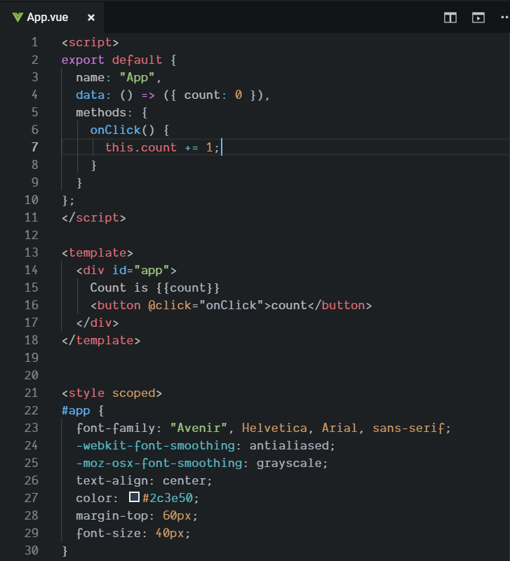
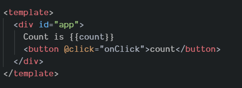

Why you should know VueJS
How am I?
- Marcus Stamström
- Live and work in Uppsala
- Software developer at Consid


Why you need a UI framwork
- More logic to handle
- focus on development
What is VueJS?
VueJS - structure
VueJS - approchable
VueJS - performance
- Small library
- Built in optimisation
Why you should use VueJS?
- progressive
- structure
- approchable
- performant
How to develop with VueJS
How VueJS updates the DOM

How VueJS updates the DOM

- Diff <div>
-
Diff props of <div>
-
Diff children of <div>
-
Diff "count is {{count}}"
-
Diff button...
Why use a virtual DOM?
Whats coming in version 3
- Faster
- Smaller
- More power
Thank you for listening!